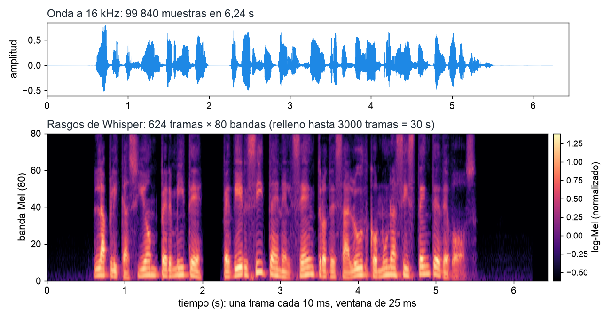

Palabra a palabra, voraz y en haz
48 pares inglés-español escritos para la asignatura (16 de desarrollo y 32 de prueba). Para cada frase, tres traducciones reales del mismo modelo, Helsinki-NLP/opus-mt-en-es: cada palabra por separado, frase entera con decodificación voraz y frase entera con haz 2 (el elegido en desarrollo).
La búsqueda en haz, paso a paso
En cada paso cada hipótesis viva se amplía con sus 3 subpalabras más probables; de todas las candidatas se quedan las 2 de mayor log-probabilidad acumulada (en morado). Las grises se descartan. Debajo de cada pieza, la log-probabilidad acumulada.
Desarrollo para decidir, prueba para medir
Desarrollo (16 frases)
Prueba (32 frases)
Prueba por fenómeno (chrF2)
Forzado del profesor
Al entrenar, cada paso del decodificador recibe la pieza correcta de la referencia, aunque el modelo prefiera otra. La tabla muestra la probabilidad que da el modelo a cada pieza correcta y la pieza que él habría elegido.
Comprobar las particiones de un corpus público
Atención cruzada real de MarianMT
Cada fila es una pieza generada en español; cada columna, una pieza del original inglés. El color es el peso de atención cruzada; el recuadro naranja marca la columna con más peso de cada fila.
Calculadora de chrF
n-gramas de caracteres sin espacios. Para cada orden: precisión = coincidencias / n-gramas de la traducción; exhaustividad = coincidencias / n-gramas de la referencia. Se promedian los órdenes con n-gramas en las dos cadenas y se combinan con F-beta. sacrebleu usa por defecto n ≤ 6 y β = 2 (chrF2).
Sondas de género: qué elige el traductor
En 14 frases el inglés no marca el género; en 6 un pronombre lo marca. Color del borde: género que elige el traductor (decodificación voraz). Para preguntar a la clase, oculta las salidas y destápalas una a una.
Resúmenes de una frase: medidos y comprobados
Noticias ficticias del Tema 6 con un resumen de referencia escrito a mano. La frase central es la más parecida (coseno TF-IDF, 92 noticias) al cuerpo de la noticia.
Un resumen escrito en directo
Agente de marcos para reservar tutorías
Esquema simplificado de la Figura 12 del tema (agente de texto: sin reconocimiento ni síntesis de voz).
Comprensión con reglas (intención y huecos: tema, día, hora, modalidad), gestión del diálogo con un marco y generación con plantillas. Horario supuesto: lunes a jueves de 16:00 a 20:00 y viernes de 9:00 a 13:00.
Comprensión del último mensaje
Marco de la reserva
Evaluación de la comprensión
32 enunciados anotados: las reglas se escribieron mirando los 12 de desarrollo; los 20 de prueba miden si generalizan.
Buscar en las noticias: índice invertido y TF-IDF
Esquema simplificado de la Figura 13 del tema (sistema de recuperación de información).
MRR de cuatro representaciones (17 preguntas de prueba)
Calculadora de MRR
Rangos del documento correcto separados por comas (TF-IDF en Q01, Q20 y Q02: 1, 4, 1 → 0,750).
Leer la respuesta: P(inicio) y P(fin)
Amarillo: tramo elegido por el modelo (máximo de P(inicio)·P(fin) en el documento); subrayado verde: respuesta anotada.
¿Contestar o abstenerse? El umbral del margen
Margen = puntuación del mejor tramo menos la de [CLS]. El sistema contesta si el margen supera el umbral. En desarrollo se fijó 0,81.
Escuchar: síntesis con y sin normalizar
Esquemas simplificados de las Figuras 17 a 20 del tema; 80 bandas log-mel según la configuración de openai/whisper-tiny.
Normalizador de cifras (clases semióticas)
Reglas mínimas: masculino por defecto, sin ordinales; año o código según las palabras anteriores (clave, contraseña, código, pin, consigna).
Calculadora de la tasa de error por palabra (WER)
Verde: igual · rojo: sustitución · gris tachado: borrado · amarillo: inserción. Siempre se pasa a minúsculas y se quita la puntuación.
WER de corpus en las 12 frases
Rasgos de Whisper
